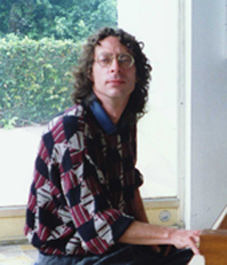

|
|  |
Caracas, Venezuela, 1-6-1957 -- 13-4-2003 c/o Elizabeth Marichal |
LISTA DE OBRAS | JUICIOS CRITICOS |
| ARTICULO EN EL NACIONAL DE D. COIFMAN | TEXTO DE M. F. MONTERO
BIO
Compositor y pianista nacido en Caracas el 1ro. de junio de 1957. Hizo su primera aparición pública a los once años, y cinco años más tarde debutó con la Orquesta Sinfónica Venezuela estrenando su Tercer Concierto para Piano Y Orquesta. Una vez culminado sus estudios de piano en Venezuela con la profesora checa Gerty Haas, continuó con Marek Jablonsky (Montreal y Bruselas), Elizabeth Westerkampf (Buenos Aires), Jorge Bolet y Alfonso Montecino (Indiana University, USA), Madeleine Malraux y Magda Tagliaferro (París) y María Curcio (Londres).
Ha desarrollado su carrera fundamentalmente en Venezuela, aunque ha recorrido con éxito escenarios de Estados Unidos, Canadá, Alemania, España, Francia, Inglaterra, Portugal, Japón y países de Laninoamérica. En Venezuela recibió en tres oportunidades consecutivas el Premio Nacional de Composición, y en 1989 recibió el Premio de la Crítica Musical por sus aportes a la interpretación pianística. En 1980 fue premiado en el Concurso Internacional de Piano de Munich, Alemania. Ha tocado como solista con la mayoría de las orquestas sinfónicas del país y dirigido por casi todos los directores venezolanos, entre ellos, Carlos Riazuelo, Rodolfo Saglimbeni, Alfredo Rugeles, Eduardo Marturet, Eduardo Rahn, Efraín Lara, Luis Miguel González, entre otros, así como directores extranjeros. Entre sus presentaciones se mencionan los conciertos con la Orquesta de Cámara de la Unión Europea bajo la dirección del maestro norruego Eivind Aadland, el concierto con la Orquesta Nacional de México, recitales en Madrid, Salle Cortot y el Palais de la Monaie en París, la gira nacional auspiciada por el Conac y la Embajada de los Estados Unidos, la gira de conciertos en Alemania con motivo de los 500 años de América, los conciertos como solista de la Orquesta Sinfónica Simón Bolivar en su gira artística a Japón.
Se ha destacado por estrenar en Venezuela obras de compositores contemporáneos como los conciertos de Alfred Sschnittke, Andrzej Panufnik, Henryk Görecki, Aaron Copland, André Jolivet, y el estreno mundial del Concierto para Piano y Orquesta del compositor colombiano Blas Emilio Atehortua dirigido por su autor. Como compositor ha estrenado sus obras en Caracas entre ellas: “Ludios” para Piano y Orquesta; “Sinfonietta La Mar” para Piano y Orquesta, y numerosas piezas para piano solo, instrumento al cual le dedicó la mayor parte de su obra. Compuso música para el teatro: la “Suite Jav & Jos” para la misma obra de José Simón Escalona; música para“Perlita Blanca” y para “La Misión” de Heiner Müller (1997) ambas dirigdas por Xiomara Moreno; música para la puesta en escena de “La mujer de espaldas” de José Balza (1998), dirigida por Javier Moreno; en 1999 y 2000, compusó la música para “El Último Minotauro” y “Clitemnestra”, ambas de León Febres-Cordero, dirigidas por Eduardo Gil. En 1999 compuso “Quinteto de Fin de Siglo” para Piano y Cuarteto de Cuerdas, estrenado por el Cuarteto Arpeggione de Caracas en ocasión del 50avo aniversario de la Asociación Cultural Humboldt, y la versión para orquesta de cuerdas interpretada por la Orquesta de Cámara de la Unión Europea, en ambas presentaciones con el compositor al piano.
En el 2001 realizó una gira nacional de
conciertos
en ocasión del Décimo Aniversario de Telcel,
interpretando
el concierto de Khachaturian con la Orquesta Sinfónica de
Maracaibo y las orquestas de los Estados Mérida,
Táchira
y Aragua, culminando la gira en Caracas con la Orquesta
Filarmónica
Nacional dirigida por Olivier Grangean. Fue profesor
de la maestría de piano de la Universidad Simón
Bolívar
(2001-2002). Su último concierto lo realizó como
solista
de la Orquesta Sinfónica Municipal de Caracas dirigida por
Luis
Miguel González, interpretando el Concierto para Piano y
Orquesta
de Panufnik, en la Sala José Félix Ribas del Teatro
Teresa
Carreño. Fue grabado un disco LP con el estreno de
su
obra “Ludios” para piano y Orquesta y se han editado cuatro
discos
compactos: “Piano Works” y “Piano Recital” para la firma Lyric,
el
CD “Música Universal” para la Fundación
Andrés
Mata, y en el 2001 el Consulado Honorario de Hungría
editó
él CD “Hungría mil años” donde
interpreta
el Tercer Concierto “Patético” para Piano y Orquesta de
Franz
Liszt con la Orquesta Sinfónica Gran Mariscal de Ayacucho
dirigida por el maestro Rodolfo Saglimbeni. Ha realizado
presentaciones
en la televisión venezolana, en la Bayerische Rundfunk de
Alemania y en la CBS de Canadá. Su últmia
obra
es el Concierto para Piano, Coro, 8 Clarinetes, 8 Contrafagotes,
8 Fagotes y 8 Contrabajos “Requiem para un idiota”, compuesta en
el 2002.